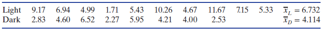
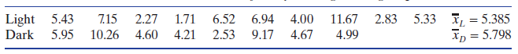
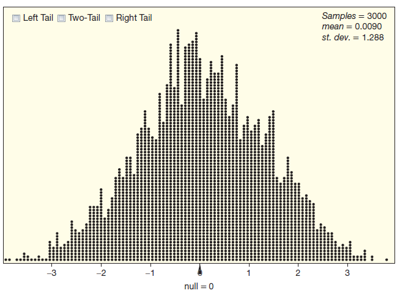
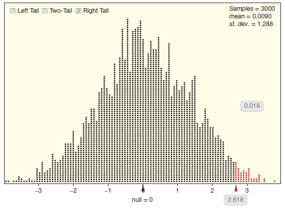
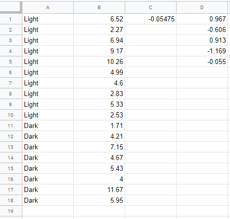
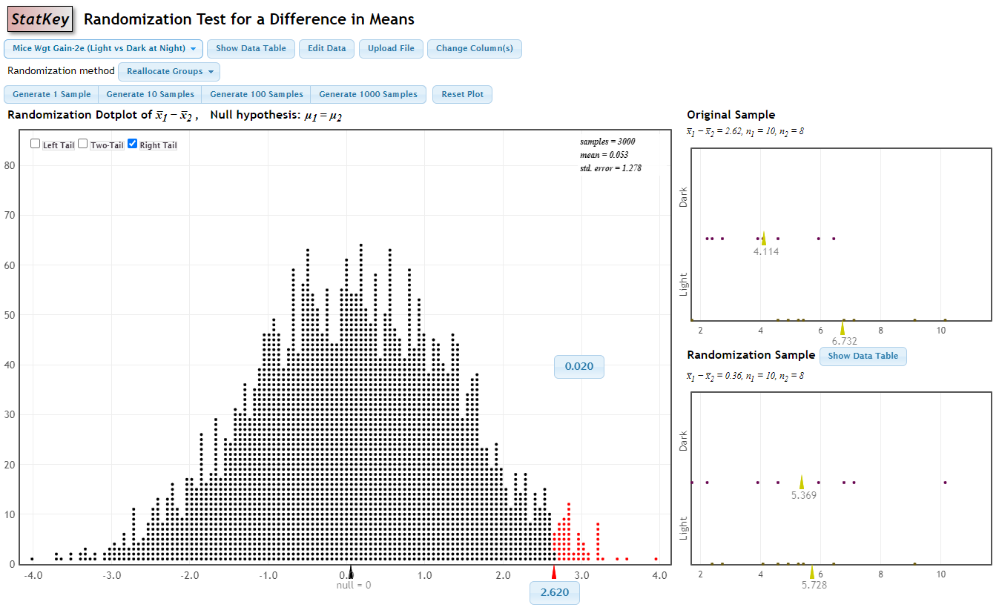
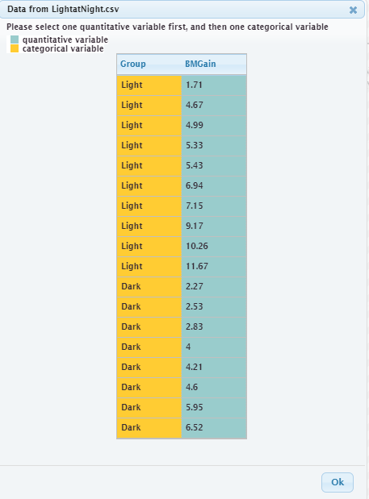
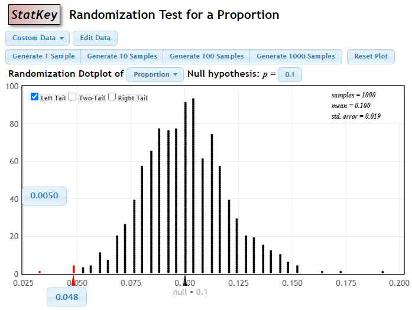
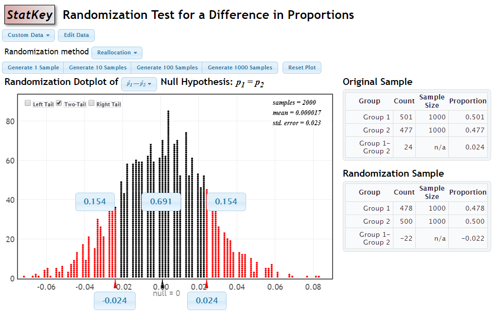
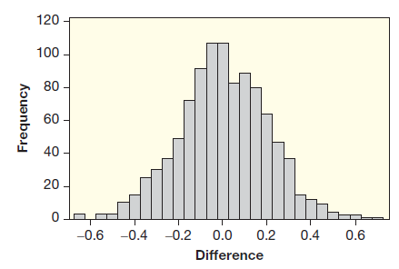

4.2 p-값
4.1절에서 가설검증은 표본 데이터가 영가설을 반박하고 대안가설을 얼마나 지지하는지를 조사한다고 하였다. 이 절은 대안가설을 지지하는 증거가 얼마나 강한지를 측정하는 방법을 소개한다.
앞 절에서 다룬 전깃불을 밤에 켜놓았을 때 쥐의 몸무게가 더 증가하는가에 대한 데이터 4.1의 상황을 생각하자. 가설은 다음과 같다.
- \(H_0: \mu_L = \mu_D\)
- \(H_a: \mu_L > \mu_D\)
\(\mu_L\)은 밤에 전깃불을 켜놓았을 때 모든 쥐의 평균 몸무게 증가량, \(\mu_D\)는 밤에 전깃불을 켜놓지 않았을 때 모든 쥐의 평균 몸무게 증가량이다. 다음 데이터가 실험에서 얻어졌다.

표본 평균 차이 \(\bar{x}_L - \bar{x}_D = 6.732 - 4.114 = 2.618\) 이다. 표본에서는 밤에 전깃불을 켜놓은 그룹의 평균 몸무게 증가량이 전깃불을 켜놓지 않은 그룹보다 더 크다. 이것에 대하여 두 가지 설명이 가능하다. 하나는 “전깃불이 몸무게 증가에 영향을 끼친다”이고, 다른 하나는 “차이는 그저 우연히 발생한 것이고 전깃불은 몸무게 증가와 관계가 없다”이다. 어떻게 하면 무작위 변동이 아니고 전깃불 때문에 차이가 발생했다는 증거가 충분하다고 결론 내릴 수 있을까? 이 문제를 해결하려면 무작위 변동을 이해할 필요가 있다.
확인문제 1. 다음 중 가설검증에서 대안가설을 지지하는 증거가 강하다는 것은 무엇을 의미하는가?
1 표본 데이터가 영가설을 반박하는 충분한 증거를 제시한다.
2 표본 데이터가 대안가설을 반박하는 충분한 증거를 제시한다.
3 표본 데이터가 영가설을 지지하는 증거를 제시한다.
4 표본 데이터가 대안가설을 지지할 수 없다는 증거를 제시한다.
확인문제 2. 예제 4.1 의 가설검증에서 전깃불이 쥐의 몸무게 증가에 영향을 끼쳤다는 주장을 검증하려면 어떤 절차를 따라야 하는가?
1 영가설을 기각할 수 없다면, 대안가설을 지지한다고 결론을 내린다.
2 표본 통계량의 변동을 계산하여 전깃불이 몸무게 증가에 영향을 미쳤다고 판단한다.
3 표본에서 관찰된 평균 차이가 우연히 발생했을 확률을 계산한다.
4 대안가설이 참일 확률을 직접 계산하여 검증한다.
확인문제 3. 예제 4.1 에서, 전깃불을 켜놓은 그룹과 켜놓지 않은 그룹의 몸무게 증가량 차이가 우연히 발생했을 가능성을 검증하기 위한 방법으로 가장 적합한 것은 무엇인가?
1 표본 평균 차이가 우연히 발생했을 확률을 계산하는 p-값을 구한다.
2 표본 통계량을 바탕으로 모집단에서의 평균 차이를 추정한다.
3 영가설을 기각하기 위한 p-값을 \(0.01\)로 설정한다.
4 표본 통계량을 이용해 각 그룹의 표준편차를 계산한다.
임의화 분포

3장에서 표본에 따라 통계량이 얼마나 변하는지 알아보기 위하여 부트스트랩 분포를 사용하였다. 여기서는 영가설이 사실일 때, 표본에 따라 통계량이 얼마나 변하는지를 이해해야 한다. 가설검증에서는 영가설과 일치되는 상황에서 표본을 뽑는 모의실험을 할 것이다. 이렇게 뽑힌 표본을 임의화 표본(randomization sample) 또는 무작위화 표본이라고 한다.
부트스트랩 표본에서처럼 모의실험으로 뽑은 임의화 표본에서도 통계량을 계산한다. 임의화 표본을 뽑고 통계량을 계산하는 과정을 반복하여 임의화 분포(randomization distribution) 또는 무작위화 분포를 만든다. 이 분포는 영가설이 사실일 때 통계량의 표집분포를 근사한다.
오리지널 표본에서 임의화 표본을 뽑기 위하여, 영가설 하에서는 쥐의 몸무게 증가는 전깃불이 있거나 없거나 같다고 가정한다. 영가설이 맞다면 Light 그룹의 어떤 값도 Dark 그룹에서 쉽게 발생할 수 있고 반대의 경우도 마찬가지로 쉽게 발생할 수 있다. 임의화 표본을 뽑기 위하여, 관측값 \(18\)개를 막 섞은 후 무작위로 \(10\)개를 뽑아 Light 그룹에 할당하고 나머지 \(8\)개는 Dark 그룹에 할당한다. 아래 테이블의 데이터는 이런 방법으로 얻은 것이다.

오리지널 표본에서 Light 그룹에 가장 큰 값인 \(11.67\)은 Light 그룹에 그대로 남아 있다. 하지만 Light 그룹에서 그다음으로 큰 두 개의 값 \(10.26\)과 \(9.17\)은 Dark 그룹에 할당되었다. 위 테이블에서 표본 평균의 차이 \(\bar{x}_L - \bar{x}_D = 5.385 - 5.798 = -0.413\) 이다. -\(0.413\)이 임의화 표본에 기초한 통계량 값 하나이다. 이 작업을 3,000번 반복하여 얻은 임의화 분포가 아래 점도표이다. 임의화 분포의 중심이 거의 0인 이유는, 영가설이 사실일 때 \(\mu_L - \mu_D = 0\) 이기 때문이다.

카드를 사용해서 임의화 분포를 만들 수도 있다. 같은 모양의 카드를 18장 준비한 후에 \(18\)개의 데이터를 각 카드에 적는다. 카드를 잘 섞고 무작위로 10장은 Light 그룹, 나머지 8장은 Dark 그룹으로 나눈다. 표본 평균 차이를 계산하여 기록한다. 이 과정을 반복하여 임의화 분포를 얻는다. 컴퓨터 없이 이런 과정을 3,000번 할 수 있겠는가?
모수와 데이터 수집 방법에 따른 여러 가지 임의화 분포는 4.5절에서 다룬다. 하지만 모든 경우에 임의화 분포는 영가설이 참일 때 단지 우연히 발생할 수 있는 통계량의 분포이다.
예제 4.9. 전깃불이 쥐의 몸무게 증가와 관련이 없다면, 다음 각 표본 평균 차이는 우연히 발생할 수 있는 값인지 위의 임의화 분포를 사용하여 답하라.
(1) \(\bar{x}_L - \bar{x}_D = 0.75\)
(2) \(\bar{x}_L - \bar{x}_D = 4.0\)
풀이 (클릭하면 풀이가 보입니다)
(1) 평균 차이 \(0.75\)는 임의화 분포에서 흔히 볼 수 있는 통계량 값이다. 전깃불이 쥐의 몸무게 증가에 영향을 끼치지 않더라도 평균 차이 \(0.75\)는 우연히 발생할 가능성이 높다.
(2) 3,000개의 임의화 표본으로 만든 임의화 분포에서 \(4.0\)만큼 극단적인 값은 한 번도 나오지 않았다. 전깃불이 몸무게 증가에 영향을 끼치지 않는다면 평균 차이 \(4.0\)은 우연히 발생하기 어렵다.
예제 4.9에서 평균 차이 \(0.75\)는 우연히 발생할 수 있지만, \(4.0\)은 우연히 발생하기 어려운 값임을 알았다. 그런데 실험에서 실제 평균값 차이는 \(\bar{x}_L - \bar{x}_D = 2.618\) 이다. 이 값은 전깃불이 몸무게 증가에 영향을 끼치지 않는다면 발생할 가능성은 얼마나 될까? 이 질문에 답하려면 좀 더 정교한 접근이 필요하다. 다음 페이지에서 알아보자.
확인문제 1. 다음 중 임의화 표본(randomization sample)에 대한 설명으로 올바른 것은 무엇인가?
1 영가설이 참일 때, 표본 데이터를 무작위로 섞어 다시 표본을 추출한 결과이다.
2 대안가설이 참일 때, 표본 데이터를 무작위로 섞어 다시 표본을 추출한 결과이다.
3 표본 평균 차이가 우연히 발생했을 확률을 계산하는 데 사용된다.
4 영가설이 참일 때, 표본 통계량을 기반으로 새로운 표본을 생성하는 방법이다.
확인문제 2. 예제 4.9 에서, 표본 평균 차이 \(\bar{x}_L - \bar{x}_D = 0.75\)가 임의화 분포에서 우연히 발생할 수 있는 값인지 판별하려면 무엇을 해야 하는가?
1 임의화 분포에서 \(0.75\)를 관찰하여, 값이 자주 나오는지 확인한다.
2 실험에서 얻은 표본 평균 차이가 \(0.75\)보다 더 극단적인지 확인한다.
3 \(0.75\)보다 작은 값들이 얼마나 자주 나오는지 확인한다.
4 \(0.75\)가 평균 차이의 최솟값인지 확인한다.
확인문제 3. 예제 4.9 에서 표본 평균 차이 \(\bar{x}_L - \bar{x}_D = 4.0\)이 우연히 발생할 가능성이 적은 값이라면, 이를 기반으로 우리가 결론 내릴 수 있는 것은 무엇인가?
1 전깃불이 쥐의 몸무게 증가에 영향을 미친다는 증거가 강하다.
2 전깃불이 쥐의 몸무게 증가에 영향을 미치지 않는다는 증거가 강하다.
3 전깃불이 쥐의 몸무게 증가에 영향을 미쳤다는 증거가 부족하다.
4 표본 평균 차이와 실제 값 사이에 큰 차이가 없으므로 결론을 내릴 수 없다.
p-값으로 증거의 강도 측정하기
임의화 분포는 영가설이 사실일 때 무작위로 발생하는 통계량은 어떻게 분포하는지 알려준다. 자연스런 다음 질문은 임의화 분포에서 관측 통계량의 위치를 찾고 영가설이 참이라면, 관측 통계량은 얼마나 발생하기 어려운 값인가이다. 이것이 통계적 추론의 가장 중요한 아이디어 중의 하나인 p-값이다. p-값은 영가설이 참일 때, 관측된 표본 통계량보다 더 극단적인 통계량 값을 주는 표본의 비율이다.
p-값은 여러가지 방법으로 계산할 수 있다. 이 장에서는 임의화 분포에서 표본 통계량의 위치를 찾아 p-값을 계산한다. p-값은 모의실험으로 만들어진 통계량의 임의화 분포에서 관측 통계량보다 더 극단적인 통계량의 비율이다.

예제 4.10. 쥐의 몸무게 증가에 대한 전깃불 효과의 p-값을 위에 있는 임의화 분포에서 어떻게 찾을지 설명하라.
풀이 (클릭하면 풀이가 보입니다)
임의화 분포는 영가설이 참인 상황에서 모의실험을 3,000번 하여 얻은 모의 표본으로 만든다. p-값은 관측 통계량 \(\bar{x}_L - \bar{x}_D = 2.618\) 보다 더 극단적인 표본 비율이다. 그림에서 \(2.618\)과 같거나 큰 값은 \(54\)개이다. 따라서 p-값은 \(54 / 3000 = 0.018\) 이다. 밤에 전깃불이 쥐의 몸무게 증가에 영향을 끼치지 않는다면, 관측된 통계량 \(2.618\)만큼 극단적인 통계량을 얻을 가능성은 \(0.018\)이다.
평균 차이 \(2.618\)을 어떻게 얻었느냐는 두 가지로 설명할 수 있다. 하나는 ’밤에 전깃불이 쥐의 몸무게를 증가시킨다(\(H_a\))’이고, 다른 하나는 ’무작위 변동 때문에 차이가 발생했고 밤에 전깃불은 쥐의 몸무게 증가의 원인이 아니다(\(H_0\))’이다. 영가설이 사실일 때, 평균 차이가 \(2.618\)만큼 극단적인 값이 발생할 가능성은 \(0.018\)로 상당히 작다. 이로써 영가설을 반박하고 대안가설인 ’밤에 전깃불은 쥐의 몸무게 증가에 영향을 끼친다’를 지지하는 강한 증거를 얻었다.
예제 4.11. 표본 평균 차이가 하나는 \(\bar{x}_L - \bar{x}_D = 2\)이고, 다른 하나는 \(\bar{x}_L - \bar{x}_D = 3\)이다. 어느 것이 더 작은 p-값을 갖겠는가?
풀이 (클릭하면 풀이가 보입니다)
p-값은 관측 통계량만큼의 극단적인 값의 비율이다. 위의 임의화 분포를 보면 3보다는 2를 넘는 모의실험 통계량 값이 훨씬 더 많다. 따라서 p-값은 \(\bar{x}_L - \bar{x}_D = 3\)이 더 작다.
구글 시트를 이용한 임의화 분포
- 시트에 데이터를 LightatNight에서 다운받는다.
- 시트1에서 영역 ’
A2:B19’의 데이터를 시트2의A1셀에 복사한다. - 시트2의 셀
C1에=average(B1:B10) - average(B11:B18)을 입력하여 Light 그룹과 Dark 그룹의 평균 차이를 구한다. - B열에서 ’범위 임의로 섞기’를 클릭하여 그룹 평균 차이를 다시 계산한다.

StatKey 사용법
- 웹 사이트(http://www.lock5stat.com/StatKey/index.html)를 방문한다.
- 맨 오른쪽의 ‘Randomization Hypothesis Tests’ 아래의 ’Test for Difference Means’를 클릭한다.
- 데이터 ’Mice Wgt Gain-2e (Light vs Dark at Night)’를 선택한다.
- 모의실험을 3,000번 한다.
- 점도표 왼쪽 상단에서 ’Right Tail’을 체크한다.
- 점도표의 오른쪽 하단의 빨간색 삼각형 아래 숫자를 클릭한다.
- 입력 상자가 나타나면 값을 \(2.618\)로 변경한다.
- 빨간색 점 위에 변경된 p-값이 계산된다.
데이터 파일을 업로드 할 때
- 교재 웹 사이트(http://www.lock5stat.com/)를 방문한다.
- 왼쪽에서 ’Datasets’를 클릭한다. second edition을 선택한다.
- ‘LightatNight’ 항목 중 csv를 클릭하여 파일을 다운받는다.
- StatKey 앱 중에 ’Test for Difference Means’를 선택한다.
- ‘Upload File’ 버튼을 클릭하면 파일 선택 창이 열린다.
- 다운받은 파일 ‘LightatNight.csv’을 선택하고 ’열기’ 버튼을 클릭하여 창을 닫는다.
- 창이 새로 열리면 양적 변수 ’BMGain’을 선택한 후에 범주형 변수인 ’Group’을 선택한다(맨 아래 그림 참조).


문제 4.1. 아프리카의 사하라 사막 남부 지역에서 말라리아 예방을 위한 모기장 사용에 대한 무작위 실험을 하여 데이터를 분석한 결과 p-값은 \(0.001\)이었다. 통계 관련 전문 용어를 사용하지 말고, 통계를 배운 적이 없는 사람에게 이 연구의 맥락에서 결과를 쉽게 이해할 수 있도록 설명하라.
풀이 만약 모기장 사용 여부가 말라리아 확산과 관련이 없다면, 이 결과만큼 극단적인 것을 얻을 가능성은 \(1000\)번 중 하나이다. 따라서 우리는 모기장이 말라리아를 예방할 가능성이 매우 높다고 결론내린다.
확인문제 1. 다음 중 p-값에 대한 설명으로 올바른 것은 무엇인가?
1 p-값은 영가설이 참일 때, 표본 통계량보다 더 극단적인 통계량이 발생할 확률이다.
2 p-값은 영가설이 거짓일 때, 표본 통계량보다 더 극단적인 통계량이 발생할 확률이다.
3 p-값은 표본 통계량의 중앙값과 그 범위 내의 확률 분포를 나타낸다.
4 p-값은 임의화 분포에서 관측된 통계량이 나올 가능성의 비율을 나타낸다.
확인문제 2. 예제 4.10 에서, p-값이 \(0.018\)로 계산되었을 때 이 값을 기반으로 영가설을 어떻게 해석할 수 있는가?
1 전깃불이 쥐의 몸무게 증가에 영향을 미친다고 결론 내린다.
2 영가설이 참이라면, 전깃불이 몸무게 증가에 영향을 미칠 확률이 \(0.018\)이다.
3 전깃불이 몸무게 증가에 영향을 미칠 가능성이 낮다는 것을 의미한다.
4 전깃불이 몸무게 증가에 영향을 미친다고 할 수 있는 강력한 증거가 된다.
확인문제 3. 예제 4.11 에서, 평균 차이 2와 평균 차이 3에 대해 p-값을 비교할 때 어떤 결론을 내릴 수 있는가?
1 \(\bar{x}_L - \bar{x}_D = 2\)의 p-값이 더 작다.
2 \(\bar{x}_L - \bar{x}_D = 3\)의 p-값이 더 작다.
3 두 p-값은 동일하다.
4 p-값은 표본 크기와 상관이 없다.
확인문제 4. 가설검증에서 영가설 \(H_0: \mu = 0\)과 대안가설 \(H_a: \mu > 0\)을 설정한 후, 표본 평균 차이 \(\bar{x} = 2.5\), 표준오차 \(SE = 1.1\)일 때, p-값을 어떻게 계산할 수 있는가?
1 p-값 = \(P(\bar{x} \geq 2.5)\)
2 p-값 = \(P(\bar{x} \geq 2.5) \times 2\)
3 p-값 = \(P(Z \geq 2.5 / 1.1)\)
4 p-값 = \(P(Z \geq 2.5)\)
확인문제 5. 예제 4.7 에서, 영가설 \(H_0: \mu = 80\)과 대안가설 \(H_a: \mu > 80\)이 있을 때, p-값이 \(0.05\)라면 어떻게 해석할 수 있는가?
1 영가설이 참이라면, 평균이 80보다 클 확률이 \(0.05\)이다.
2 영가설이 참이라면, 표본 평균이 80보다 클 확률이 \(0.05\)이다.
3 영가설을 기각할 충분한 증거가 있다.
4 영가설을 기각할 충분한 증거가 없다.
p-값과 대안가설
지금까지 임의화 분포는 영가설이 참이라는 가정 하에서 만들었다. 대안가설은 임의화 분포를 만들거나 p-값을 계산하는데 어떤 역할을 할까? 임의화 분포를 만드는데 대안가설은 어떤 역할도 하지 않는다. 임의화 표본은 영가설에만 의존하고 대안가설과는 관계가 없다. 하지만 대안가설은 p-값 결정에 중요한 역할을 한다. p-값 계산에 어느 쪽 꼬리를 사용할지 알려주는 것이 대안가설이다. 대안가설에서 부호가 크다(>)이면 오른쪽 꼬리, 작다(<)이면 왼쪽 꼬리, 다르다(≠)이면 양쪽 꼬리에서 p-값을 계산한다.
몸무게 증가에 대한 전깃불 예제에서 대안가설은 \(H_a: \mu_L > \mu_D\)이다. 표본이 \(\mu_L - \mu_D > 0\)를 지지하는가에 대한 증거를 찾으므로 p-값은 임의화 분포의 오른쪽 꼬리에서 \(\bar{x}_L - \bar{x}_D\)이상인 통계량의 비율이다. 오른쪽꼬리 검증(right-tail test)의 예이다. 다음 두 예제는 왼쪽꼬리 검증(left-tail test)과 양쪽 꼬리 검증(two-tail test)을 다룬다.
예제 4.12. 학생 \(250\)명이 4자리 숫자를 무작위로 만들었다. \(250\)명 중에 단지 \(12\)명만이 마지막 숫자가 0이다. 이 데이터는 학생이 마지막 숫자가 0인 것을 싫어한다는 증거인가? 숫자를 무작위로 골랐다면 마지막 자리의 숫자가 0인 비율은 \(0.1\)이다.
(1) 영가설과 대안가설을 기술하라.
(2) 임의화 분포의 중심은 무엇인가?
(3) 이 검증은 오른쪽 꼬리, 왼쪽 꼬리, 양쪽 꼬리 검증 중에서 어느 것인가?
(4) 표본 통계량 기호와 값은 무엇인가?
(5) StatKey 앱에서 임의화 분포와 p-값을 구하라.
풀이 (클릭하면 풀이가 보입니다)
(1) 모수 \(p\)는 학생들이 마지막 자리에 0을 선택하는 비율이다. 이 비율이 \(0.1\)보다 작은가를 검증하는 것이므로 가설은 다음과 같다.
- \(H_0: p = 0.1\)
- \(H_a: p < 0.1\)
(2) 임의화 분포는 영가설이 참이라는 가정 하에서 만든다. 따라서 임의화 분포의 중심은 \(0.1\)이다.
(3) \(p < 0.1\)에 대한 증거를 찾으므로 왼쪽 꼬리 검증이다.
(4) 표본 비율 \(\hat{p} = 12 / 250 = 0.048\) 이다.
(5) StatKey 사용법
- ‘Randomization Hypothesis Tests’ 중에서 ’Test for Single Proportion’을 선택한다.
- ‘Edit Data’ 버튼을 클릭한다.
- count는 12, sample size는 250을 입력한다.
- ’Null hypothesis’의 \(p\)값은 \(0.1\)로 입력한다.
- 1,000개의 표본을 뽑는다.
- ’Left Tail’을 체크한다.
- 왼쪽 꼬리의 경계값을 \(0.048\)로 변경한다.
아래 그림과 비슷한 결과가 나올 것이다. 기대했던 것처럼 분포의 중심은 \(0.1\)이다. 표본 통계량 \(0.048\)의 왼쪽 점은 모두 빨간색이다. 이들의 비율 \(0.005\)가 p-값이다. 학생들이 0을 \(10\)분의 1로 선택했다면 \(0.048\)만큼 극단적인 표본 비율이 나올 가능성은 약 \(0.005\)이다.

확인문제 1. 임의화 분포(randomization distribution)에 대한 설명 중 옳은 것은?
1 임의화 분포는 대안가설을 기반으로 생성된다.
2 임의화 분포의 중심은 대안가설의 모수 값이다.
3 임의화 분포는 영가설이 참이라는 가정 하에서 만들어진다.
4 임의화 분포는 표본 데이터의 실제 분포를 반영한다.
확인문제 2. p-값을 계산할 때 대안가설의 역할로 올바른 것은?
1 대안가설은 임의화 분포의 중심을 결정한다.
2 대안가설은 p-값을 계산할 때 어느 쪽 꼬리를 사용할지 결정하는 데 도움을 준다.
3 대안가설은 p-값을 직접적으로 계산하는 역할을 한다.
4 대안가설은 표본 통계량을 변형하여 임의화 표본을 생성하는 데 사용된다.
확인문제 3. 예제 4.12 에서 학생들이 무작위로 4자리 숫자를 생성할 때, 마지막 숫자가 0이 될 확률을 검증하는 영가설과 대안가설을 올바르게 설정한 것은?
1 \(H_0: p = 0.1\), \(H_A: p > 0.1\)
2 \(H_0: p = 0.1\), \(H_A: p < 0.1\)
3 \(H_0: p > 0.1\), \(H_A: p = 0.1\)
4 \(H_0: p \neq 0.1\), \(H_A: p = 0.1\)
확인문제 4. 예제 4.12 에서 표본 통계량의 값으로 올바른 것은?
1 \(\frac{12}{250} = 0.048\)
2 \(\frac{12}{100} = 0.12\)
3 \(\frac{12}{200} = 0.06\)
4 \(\frac{25}{250} = 0.1\)
확인문제 5. 예제 4.12 에서 사용된 검증 방법의 유형은?
1 오른쪽 꼬리 검증 (right-tail test)
2 왼쪽 꼬리 검증 (left-tail test)
3 양쪽 꼬리 검증 (two-tail test)
4 단측 검증이 아니라 양측 검증이다.
예제 4.13. \(2015\)년 7월 미국 성인 \(2001\)명에게 컴퓨터, TV, 휴대폰 등에서 게임을 즐기느냐 물었다. 남자는 \(1000\)명 중 \(501\)명, 여자는 \(1001\)명 중 \(477\)명이 게임을 즐긴다고 답했다. 이것으로 남녀 사이에 게임을 즐기는 비율이 다르다고 할 수 있을까? 모수를 정의하고 영가설과 대안가설을 기술하라. 임의화 분포의 중심은 무엇인가? 이 검증은 오른쪽 꼬리, 왼쪽 꼬리, 양쪽 꼬리 검증 중에서 어느 것인가? 표본 통계량의 기호와 값은 무엇인가?
풀이 (클릭하면 풀이가 보입니다)
이 검증은 비율 차이에 관한 것이다. \(p_M\)을 성인 남자가 게임을 즐기는 비율, \(p_F\)를 성인 여자가 게임을 즐기는 비율이라고 하자. 가설은 다음과 같다.
- \(H_0: p_M = p_F\)
- \(H_a: p_M \neq p_F\)
영가설이 \(p_M = p_F\)이므로 비율 차이에 대한 임의화 분포의 중심은 0이다. 대안가설에 부등호(≠)가 있으므로 양쪽 꼬리 검증이다. 표본 통계량은 \(\hat{p}_M - \hat{p}_F = 501 / 1000 - 477 / 1001 = 0.501 - 0.477 = 0.024\) 이다.
예제 4.14. StatKey를 사용하여 위 예제에 대한 임의화 분포를 만들고 p-값을 구하라.
풀이 (클릭하면 풀이가 보입니다)
- StatKey 앱에서 ’Randomization Test for a Difference in Proportions’를 선택한다.
- ‘Edit Data’ 버튼을 클릭하고 두 그룹의 count와 sample size를 입력한다.
- 모의실험을 2,000번 한다.
- 점도표의 왼쪽 상단에서 ’Two-Tail’을 선택한다.
- 그래프 하단에서 오른쪽 통계량 값에 \(0.024\)를 입력한다.
아래 그림과 유사한 결과를 얻을 것이다. 임의화 분포의 중심은 0이다. 표본 통계량 \(0.024\)의 오른쪽 꼬리 비율은 \(0.154\)이다. 양쪽 꼬리 검증이므로 오른쪽 꼬리 비율 \(0.154\)의 \(2\)배인 \(0.308\)이 p-값이다. 남녀 사이에 게임을 즐기는 비율의 차이가 없다면 표본 비율의 차이가 \(0.024\)만큼 극단적인 값을 얻을 가능성은 \(0.308\)이다.

양쪽 꼬리 검증에서 항상 꼬리 쪽의 비율을 선택해야 한다. 그렇지 않으면 1보다 큰 p-값이 나온다. p-값은 확률이므로 1보다 클 수 없다.
표본 통계량 계산에서 뺄셈은 대안가설과 일치해야 한다. 전깃불 실험에서 \(\mu_L\)과 \(\mu_D\)는 light 그룹과 dark 그룹에서 각각 쥐의 평균 몸무게 증가량이라고 하자. 대안가설 \(\mu_L > \mu_D\)는 \(\mu_L - \mu_D > 0\) 이다. 이 대안가설에 해당하는 표본 평균 차이는 \(\bar{x}_L - \bar{x}_D = 2.618\) 이다. 대안가설을 평균의 순서가 뒤바뀐 \(\mu_D < \mu_L\)로 설정했다고 하자. 이 경우에는 표본 통계량이 \(\bar{x}_D - \bar{x}_L = -2.618\) 이다. 대안가설에서 두 모수의 순서가 바뀌어 부호가 달라져서 왼쪽 꼬리 검증이 되었다. 하지만 p-값은 똑같다.
부트스트랩 분포에서 모의실험에 따라 신뢰구간이 조금씩 다르게 나왔다. 마찬가지로 임의화 분포로 p-값을 구할 때도 모의실험 할 때마다 약간 다르게 나온다. 영가설이 참일 때 표본이 얼마나 극단적인가에 관심이 있으므로 p-값에서 소수점 아래 \(3\)번째 숫자는 중요하지 않다. 3째 자리까지 정확하게 구하고 싶다면 임의화 실험을 더 많이 한다.
p-값이 얼마나 작아야 표본은 영가설을 기각하고 대안가설을 지지하는 충분한 증거를 제공한다고 결론 내릴 수 있을까? 이 주제는 다음 절에서 다룬다.
확인문제 1. 다음 중 영가설과 대안가설에 대한 설명으로 올바른 것은 무엇인가?
1 영가설은 “차이가 없다”는 주장이고, 대안가설은 “차이가 있다”는 주장이다.
2 영가설은 항상 참이며, 대안가설은 거짓일 수 있다.
3 영가설은 대개 “효과가 있다”는 주장을 포함한다.
4 대안가설은 영가설을 증명할 수 있는 데이터를 찾는 것을 목표로 한다.
확인문제 2. 예제 4.13 에서, 남성과 여성의 게임을 즐기는 비율에 대해 영가설을 \(H_0: p_M = p_F\)로 설정한 후, 표본 평균 차이 \(\hat{p}_M - \hat{p}_F = 0.024\)를 계산했다. 이때 임의화 분포의 중심은 무엇인가?
1 0
2 \(0.024\)
3 \(0.1\)
4 1
확인문제 3. 예제 4.14 에서, p-값이 \(0.308\)로 계산된 경우, 이는 무엇을 의미하는가?
1 영가설을 기각할 충분한 증거가 있다.
2 영가설을 기각할 충분한 증거가 없다.
3 대안가설을 지지할 수 있는 확률이 \(0.308\)이다.
4 표본 평균 차이가 \(0.308\)보다 크지 않다는 것을 의미한다.
확인문제 4. p-값 계산에서 양쪽 꼬리 검증을 사용하는 경우, p-값은 어떻게 계산되는가?
1 한 쪽 꼬리의 비율을 두 배로 곱한 값이다.
2 한 쪽 꼬리의 비율을 그대로 사용하는 값이다.
3 양쪽 꼬리의 비율을 합산한 값이다.
4 p-값은 표본 통계량에 비례한다.
확인문제 5. 예제 4.13 에서 남녀 비율 차이 검정에 대한 p-값이 \(0.308\)로 계산된 경우, 이 값을 해석할 때 올바른 결론은 무엇인가?
1 남녀 간에 게임을 즐기는 비율에 차이가 있다는 강력한 증거가 있다.
2 남녀 간에 게임을 즐기는 비율에 차이가 있을 가능성은 매우 낮다.
3 영가설을 기각할 충분한 증거가 없으므로 비율에 차이가 있다고 결론 내릴 수 없다.
4 남녀 간에 게임을 즐기는 비율에 차이가 있을 확률은 \(0.308\)이다.
학습 내용 정리
다음 사항을 이해하거나 해결하는 능력이 있어야 한다.
- 임의화 분포는 영가설이 참일 때 무작위로 발생하는 통계량의 분포를 알려준다.
- 컴퓨터로 임의화 분포를 만드는 방법을 이해한다.
- 영가설이 참일 때, 관측 표본과 같거나 더 극단적인 통계량을 산출하는 표본의 비율이 p-값이다.
- p-값을 계산할 때 한쪽 꼬리 검증과 양쪽 꼬리 검증을 구분할 수 있다.
- 임의화 분포에서 p-값을 구할 수 있다.
임의화 분포
영가설 하에서 모의실험으로 표본을 뽑아 계산한 통계량의 분포가 임의화 분포이다. 임의화 분포의 중심은 영가설에서 설정한 값이다. 임의화 분포는 영가설이 참일 때 표본 통계량이 어떻게 분포하는지 알려준다.
p-값
p-값은 관측된 표본만큼 극단적인 통계량 값을 산출하는 표본의 비율이다.
임의화 분포에서 p-값
임의화 분포에서 p-값을 구하려면
- 임의화 분포에서 관측 통계량의 위치를 찾는다.
- p-값은 관측 통계량만큼 극단적인 모의실험으로 얻은 통계량의 비율이다.
표본 통계량이 임의화 분포의 중심에서 꼬리 쪽으로 멀수록 p-값은 더 작아진다.
p-값과 대안가설
오른쪽 꼬리 검증: 대안가설에 기호 크다(>)가 있으면, p-값은 오른쪽 꼬리에서 관측 통계량 값과 같거나 큰 통계량의 비율이다.
왼쪽 꼬리 검증: 대안가설에 기호 작다(<)가 있으면, p-값은 왼쪽 꼬리에서 관측 통계량 값과 같거나 작은 통계량의 비율이다.
양쪽 꼬리 검증: 대안가설에 기호 다르다(≠)가 있으면, p-값은 관측 통계량에서 꼬리 쪽 방향의 비율을 구하여 \(2\)배 한다.
확인문제 1. 임의화 분포에 대한 설명으로 올바른 것은 무엇인가?
1 임의화 분포는 영가설이 참일 때, 무작위로 발생하는 표본 통계량의 분포를 나타낸다.
2 임의화 분포의 중심은 표본 통계량의 평균값이다.
3 임의화 분포는 대안가설이 참일 때의 통계량 분포이다.
4 임의화 분포의 중심은 대안가설에서 설정한 값이다.
확인문제 2. p-값에 대한 설명으로 옳지 않은 것은 무엇인가?
1 p-값은 관측된 표본만큼 극단적인 통계량을 산출하는 표본의 비율이다.
2 p-값은 임의화 분포에서 관측 통계량이 나올 가능성의 비율을 나타낸다.
3 p-값이 작을수록 영가설을 기각할 수 있는 증거가 강하다고 해석한다.
4 p-값은 관측 통계량보다 더 작은 값의 비율을 나타내며, 값이 클수록 영가설을 기각할 수 없다.
확인문제 3. p-값을 구할 때, 양쪽 꼬리 검증을 사용할 때 올바른 계산 방법은 무엇인가?
1 p-값은 한 쪽 꼬리에서 관측 통계량과 같거나 더 극단적인 통계량의 비율을 두 배로 곱한 값이다.
2 p-값은 양쪽 꼬리에서 관측 통계량보다 더 극단적인 통계량의 비율을 두 배로 곱한 값이다.
3 p-값은 오른쪽 꼬리에서 관측 통계량과 같거나 더 큰 통계량의 비율이다.
4 p-값은 왼쪽 꼬리에서 관측 통계량과 같거나 더 작은 통계량의 비율이다.
확인문제 4. 오른쪽 꼬리 검증에서 p-값을 어떻게 구하는가?
1 p-값은 왼쪽 꼬리에서 관측 통계량과 같거나 더 작은 통계량의 비율이다.
2 p-값은 오른쪽 꼬리에서 관측 통계량과 같거나 더 작은 통계량의 비율이다.
3 p-값은 오른쪽 꼬리에서 관측 통계량과 같거나 더 큰 통계량의 비율이다.
4 p-값은 양쪽 꼬리에서 관측 통계량과 같거나 더 극단적인 통계량의 비율이다.
확인문제 5. 임의화 분포에서 p-값을 계산할 때, 관측 통계량이 임의화 분포의 중심에서 멀리 떨어질수록 p-값은 어떻게 변화하는가?
1 p-값은 더 커진다.
2 p-값은 더 작아진다.
3 p-값은 변하지 않는다.
4 p-값은 무작위로 변한다.
과제 4.4. StatKey 앱에서 모의실험을 \(10{,}000\)번 하여 만든 임의화 분포에서 구한 p-값과 가장 가까운 값을 보기에서 고르시오. (각 문항의 보기는 \(0.005\), \(0.008\), \(0.01\), \(0.016\), \(0.04\), \(0.07\), \(0.10\), \(0.14\), \(0.22\), \(0.25\) 중 하나)
(1) \(H_0: p = 0.5\) vs \(H_a: p > 0.5\) (\(n = 50\), \(\hat{p} = 30/50 = 0.60\)) — p-값은?
1 \(0.005\)
2 \(0.008\)
3 \(0.01\)
4 \(0.016\)
5 \(0.04\)
6 \(0.07\)
7 \(0.10\)
8 \(0.14\)
9 \(0.22\)
10 \(0.25\)
(2) \(H_0: p = 0.5\) vs \(H_a: p < 0.5\) (\(n = 100\), \(\hat{p} = 38/100 = 0.38\)) — p-값은?
1 \(0.005\)
2 \(0.008\)
3 \(0.01\)
4 \(0.016\)
5 \(0.04\)
6 \(0.07\)
7 \(0.10\)
8 \(0.14\)
9 \(0.22\)
10 \(0.25\)
(3) \(H_0: p = 0.7\) vs \(H_a: p < 0.7\) (\(n = 200\), \(\hat{p} = 125/200 = 0.625\)) — p-값은?
1 \(0.005\)
2 \(0.008\)
3 \(0.01\)
4 \(0.016\)
5 \(0.04\)
6 \(0.07\)
7 \(0.10\)
8 \(0.14\)
9 \(0.22\)
10 \(0.25\)
(4) \(H_0: p = 0.6\) vs \(H_a: p > 0.6\) (\(n = 80\), \(\hat{p} = 52/80 = 0.65\)) — p-값은?
1 \(0.005\)
2 \(0.008\)
3 \(0.01\)
4 \(0.016\)
5 \(0.04\)
6 \(0.07\)
7 \(0.10\)
8 \(0.14\)
9 \(0.22\)
10 \(0.25\)
(5) \(H_0: p = 0.5\) vs \(H_a: p \neq 0.5\) (\(n = 100\), \(\hat{p} = 42/100 = 0.42\)) — p-값은?
1 \(0.005\)
2 \(0.008\)
3 \(0.01\)
4 \(0.016\)
5 \(0.04\)
6 \(0.07\)
7 \(0.10\)
8 \(0.14\)
9 \(0.22\)
10 \(0.25\)
(6) \(H_0: p = 0.5\) vs \(H_a: p \neq 0.5\) (\(n = 40\), \(\hat{p} = 28/40 = 0.70\)) — p-값은?
1 \(0.005\)
2 \(0.008\)
3 \(0.01\)
4 \(0.016\)
5 \(0.04\)
6 \(0.07\)
7 \(0.10\)
8 \(0.14\)
9 \(0.22\)
10 \(0.25\)
과제 4.5. 카페인이 신체에 어떤 영향을 끼치는지는 폭넓게 연구되었다. 한 연구자가 카페인이 손가락으로 두드리는 속도를 증가시키는지 실험으로 밝히고 싶었다. \(20\)명의 학생을 무작위로 두 그룹으로 \(10\)명씩 나누었다. 한 그룹은 카페인이 든 커피를, 다른 그룹은 카페인이 없는 커피를 마시게 하였다. 이 실험은 이중맹으로 설계되었다. 커피를 마시고 두 시간이 지난 후 학생이 \(1\)분 동안 손가락으로 두드린 횟수를 기록하였다. 실험 결과 파일 CaffeineTaps는 교재 웹사이트(http://www.lock5stat.com/)에서 얻을 수 있다. 임의화 분포는 StatKey 앱으로 \(10{,}000\)번 실험하여 구하라.
(1)-a 카페인 그룹의 평균 속도 \(\mu_c\), 카페인이 없는 그룹의 평균 속도 \(\mu_n\)일 때 영가설은?
1 \(H_0: \mu_c = \mu_n\)
2 \(H_0: \mu_c < \mu_n\)
3 \(H_0: \mu_c > \mu_n\)
4 \(H_0: \mu_c \neq \mu_n\)
5 \(H_a: \mu_c = \mu_n\)
6 \(H_a: \mu_c < \mu_n\)
7 \(H_a: \mu_c > \mu_n\)
8 \(H_a: \mu_c \neq \mu_n\)
(1)-b 대안가설은?
1 \(H_0: \mu_c = \mu_n\)
2 \(H_0: \mu_c < \mu_n\)
3 \(H_0: \mu_c > \mu_n\)
4 \(H_0: \mu_c \neq \mu_n\)
5 \(H_a: \mu_c = \mu_n\)
6 \(H_a: \mu_c < \mu_n\)
7 \(H_a: \mu_c > \mu_n\)
8 \(H_a: \mu_c \neq \mu_n\)
(2) 표본에서 얻은 평균 속도의 차이 \(\bar{x}_c - \bar{x}_n = 1.6\)에 대한 p-값과 가장 가까운 값은?
1 \(0.60\)
2 \(0.45\)
3 \(0.11\)
4 \(0.03\)
5 \(0.02\)
6 \(0.01\)
7 \(0.005\)
8 \(0.001\)
(3) 표본에서 얻은 평균 속도의 차이 \(\bar{x}_c - \bar{x}_n = 2.4\)에 대한 p-값과 가장 가까운 값은?
1 \(0.60\)
2 \(0.45\)
3 \(0.11\)
4 \(0.03\)
5 \(0.02\)
6 \(0.01\)
7 \(0.005\)
8 \(0.001\)
(4) 다음 중 카페인이 손가락으로 두드리는 평균 속도를 증가시킨다는 데 더 강한 증거를 제공하는 것은?
1 \(1.6\)
2 \(2.4\)
과제 4.6. 선거에서 후보자 지지를 호소할 때, 후보자 목소리가 녹음된 전화와 후보자가 보낸 전단지 중에 어느 것이 더 효과가 있을까? \(500\)명의 유권자를 무작위로 \(250\)명씩 두 그룹으로 나누었다. 한 그룹에는 녹음된 목소리로 전화를 했고, 다른 그룹에는 전단지를 보냈다.
(1)-a 녹음된 목소리 그룹의 지지 비율 \(p_c\), 전단지 그룹의 지지 비율 \(p_f\)일 때 영가설은?
1 \(H_0: p_c = p_f\)
2 \(H_0: p_c < p_f\)
3 \(H_0: p_c > p_f\)
4 \(H_0: p_c \neq p_f\)
5 \(H_a: p_c = p_f\)
6 \(H_a: p_c < p_f\)
7 \(H_a: p_c > p_f\)
8 \(H_a: p_c \neq p_f\)
(1)-b 대안가설은?
1 \(H_0: p_c = p_f\)
2 \(H_0: p_c < p_f\)
3 \(H_0: p_c > p_f\)
4 \(H_0: p_c \neq p_f\)
5 \(H_a: p_c = p_f\)
6 \(H_a: p_c < p_f\)
7 \(H_a: p_c > p_f\)
8 \(H_a: p_c \neq p_f\)

(2)-a \(\hat{p}_c - \hat{p}_f = 0.2\)의 p-값과 가장 가까운 값은?
1 \(0.008\)
2 \(0.066\)
3 \(0.124\)
4 \(0.150\)
5 \(0.253\)
6 \(0.392\)
7 \(0.542\)
8 \(0.842\)
(2)-b \(\hat{p}_c - \hat{p}_f = -0.4\)의 p-값과 가장 가까운 값은?
1 \(0.008\)
2 \(0.066\)
3 \(0.124\)
4 \(0.150\)
5 \(0.253\)
6 \(0.392\)
7 \(0.542\)
8 \(0.842\)
(3) 두 방법의 효과가 다르다는 주장에 더 강한 증거를 제공하는 통계량은?
1 \(\hat{p}_c - \hat{p}_f = 0.2\)
2 \(\hat{p}_c - \hat{p}_f = -0.4\)